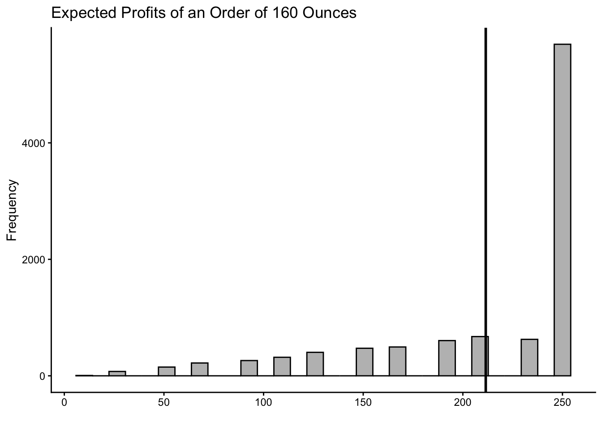
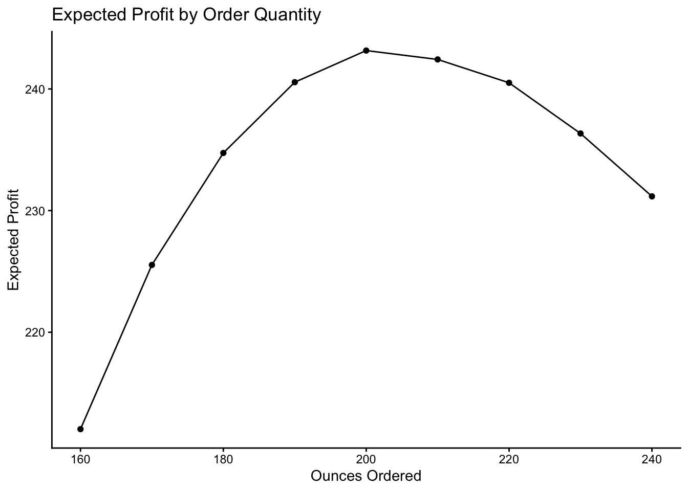
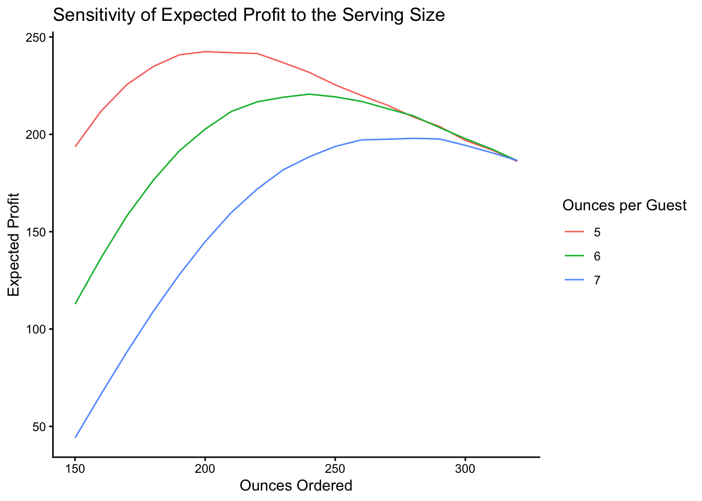

library(tidyverse)
library(extraDistr)3 Simulation in R
In this module we will build our first business simulation model using R. We will start by identifying and defining the parts of the model as this provides the basic structure. We will then iterate our model several times so that we can obtain the distribution of expected outcomes. Finally, we will modify some of the model’s inputs, so that we can check the robustness of our results. Throughout, we will keep every scenario in a single tibble and let R evaluate all of them at once.
3.1 Roll With It Sushi Needs Your Help
Renowned for serving the freshest sushi in the city, Roll With It Sushi is hosting a yellow-tail festival. Every morning, the Sous-Chef purchases fish at the market and any unsold fish at the end of the day gets discarded.
The restaurant has contacted you because they are still determining how many people will attend the event and worry about how this will impact their business financially. To ensure they have enough sushi and budget appropriately, they want you to recommend the amount of fish needed. Based on past events, they expect at least 20 people to attend and have the capacity to seat up to 50 guests. They anticipate the most likely attendance to be around 30 people, and without your guidance they feel like this is the best guide in determining the fish needed.
Roll With It Sushi can purchase any quantity of yellow-tail from the fresh market at 9 dollars for 16 ounces (divisible). Each guest at the festival is entitled to 5 ounces of fish. If the sushi runs out, some customers will not be happy. However, the restaurant has promised to refund their entry fee. Additionally, they have promised to serve their famous Miso soup to every attendee. The cost of making a batch for up to 50 guests is 300 dollars.
Given that the festival charges 20 dollars per entry, how much yellow-tail would you recommend the restaurant to purchase to maximize expected profits?
3.2 Model Framework
The restaurant provides you with a lot of information which might be overwhelming at first glance. To make the task less daunting, we should organize/classify the information so that we can create a model. For many business problems, the data can be classified into the following parts:
The inputs have given fixed values and provide the model’s basic structure. These are values that are most likely to be given and determined.
The decision variables are values the decision maker controls. We are usually interested in finding the optimal level of this variable.
The calculated values transform inputs and decision variables to other values that help describe our model. These make the model more informative and often are required to derive outputs.
The random variables are the primary source of uncertainty in the model. They are often modeled by sampling probability distributions.
The outputs are the ultimate values of interest; the inputs, decision variables, random variables, or calculated values determine them.
Below, you can see how we can classify and input the information in R.
Order_Oz<-160 # Decision Variable
Price_Fish_Oz<-9/16 # Input
Price_Miso<-300 # Input
Entry_Fee<-20 # Input
Fish_Entitled_Oz<-5 #Input
set.seed(20)
Attendance<-round(rtriang(1,20,50,30),0) # Random Variable
Demand<-Attendance*Fish_Entitled_Oz # Calculated
Available<-Order_Oz # Calculated
Consumption<-min(Demand,Available) #Calculated
Revenue<-Consumption/Fish_Entitled_Oz*Entry_Fee# Calculated
Cost<-Order_Oz*Price_Fish_Oz+Price_Miso #Calculated
Profit<-Revenue-Cost # OutcomeIn the model above, you can see how the inputs have fixed values. These values were given to us by the restaurant and the restaurant has little or no control over them (the market price of the fish, the cost of making Miso soup, etc.). The random variable captures the source of uncertainty (i.e., how many people attend the event). As you can see we have used here the rtriang() function from the extraDistr package to generate the attendance. We have chosen the triangle distribution since the restaurant has provided us with a lower limit (20), an upper limit (50), and a most likely case for attendance (30). Note also the use of the set.seed() function. This allows you to replicate the random numbers generated.
The calculated variables combine inputs, the decision variable, and the random variable to provide insight on how much fish is expected to be both consumed and available. They also help us determine the profit (output), which is our main guide in knowing whether the decision of ordering \(x\) ounces of fish is the “best”.
3.3 The News Vendor Problem
Note how the decision variable (Order_Oz) affects directly our outcome (Profit). We can see that it decreases the restaurant’s profit through costs, but also affects revenue through the amount of fish available. This is the heart of the problem. We don’t know how many people will attend, so if the restaurant orders too much fish their profits will go down because their costs are large. However, if they order too little then they will have to issue refunds, which decrease their revenue.
As you observe the Profit formula in the code above, you’ll notice the use of the min() function. This function returns the minimum of the Demand and Available values. The intuition here is that the restaurant can only collect entry fees for people who consumed sushi when the attendance is greater than the amount of sushi available. Likewise, their revenue will be capped at the total amount of people who attended, even if they ordered plenty of fish.
The problem illustrated above is called the news vendor problem. The news vendor problem is a classic decision-making problem in operations research and economics that involves deciding how much of a product to order (and sometimes at what price to sell it). The problem is called the “news vendor” problem because it was originally used to model the decision-making process of a newspaper vendor trying to decide how many copies of a newspaper to order and at what price to sell them.
3.4 Law of Large Numbers
Before we answer the question of how much fish to order, we must realize a couple of flaws of the model we have created. Mainly, we have run the simulation once and it is unlikely (although possible) that the attendance will be exactly the single value simulated by the rtriang() function (\(44\)). Instead, we want to provide the restaurant with a set of eventualities. Worst case scenarios (low attendance), best case scenarios (high attendance), and most likely outcome for their decision. This is only possible if we generate several attendance numbers, and see how the profit (output) behaves.
An additional problem is that if we tell the restaurant that the expected profit of ordering \(x\) amount of fish is \(y\), we want to make sure that the average is not biased. Recall that as the sample size of a study increases, the average of the sample will converge towards the true population mean. In other words, as the number of simulations in our model increases, the estimate of the expected profit becomes more accurate. This is known as the Law of Large Numbers.
The code below repeats the simulation several times, allowing for different attendance scenarios to arise. Although there is not a set number of times one should run a simulation to get a good estimate of the mean (or distribution), computers are powerful enough to run thousands if not millions of simulations. Below we run the simulation 10,000 times for illustration purposes.
n<-10000
set.seed(12)
Sushi<-tibble(
Attendance=round(rtriang(n,20,50,30),0), # Random Variable
Demand=Attendance*Fish_Entitled_Oz, # Calculated
Available=Order_Oz, # Calculated
Consumption=pmin(Demand,Available), # Calculated
Revenue=Consumption/Fish_Entitled_Oz*Entry_Fee, # Calculated
Cost=Order_Oz*Price_Fish_Oz+Price_Miso, # Calculated
Profit=Revenue-Cost) # Outcome
Sushi# A tibble: 10,000 × 7
Attendance Demand Available Consumption Revenue Cost Profit
<dbl> <dbl> <dbl> <dbl> <dbl> <dbl> <dbl>
1 30 150 160 150 600 390 210
2 35 175 160 160 640 390 250
3 22 110 160 110 440 390 50
4 30 150 160 150 600 390 210
5 20 100 160 100 400 390 10
6 36 180 160 160 640 390 250
7 31 155 160 155 620 390 230
8 30 150 160 150 600 390 210
9 35 175 160 160 640 390 250
10 29 145 160 145 580 390 190
# ℹ 9,990 more rowsThe model has not changed at all; only the number of rows has. The tibble() function builds a table one column at a time, and it has two properties that make it ideal for simulation. First, a column may refer to any column defined before it, so the model reads top to bottom exactly like the list of parts above. Second, a single value such as Order_Oz is recycled down the entire column, which is why the inputs and the decision variable do not need to be repeated ten thousand times by hand. Each of the \(10{,}000\) rows is now one complete scenario for the festival.
The one change worth highlighting is pmin() in place of min(). The min() function returns a single number, the smallest value it is given, which would collapse our whole column into one value. The pmin() function is the parallel minimum: it compares the vectors element by element and returns a vector of the same length, so each row gets its own minimum of demand and availability. Many R functions come in this pair; pmax() plays the same role for maxima.
We can now summarise the results. The summarise() function collapses a tibble down to the statistics we ask for.
Sushi %>% summarise(Expected_Profit=mean(Profit),
SD=sd(Profit),
Worst=min(Profit),
Best=max(Profit))# A tibble: 1 × 4
Expected_Profit SD Worst Best
<dbl> <dbl> <dbl> <dbl>
1 211. 56.9 10 250From the simulation it seems like the restaurant would make on average a profit of about \(211.5\) dollars if they order \(160\) ounces of fish. There are however, a couple of questions left unanswered. First, what are the other possible profits when ordering \(160\) ounces? Second, is there another amount of fish that would give them a higher expected profit?
3.5 Flaw Of Averages
To answer the first question we can generate a histogram of all the results of our simulation model. We can then report this to the restaurant and make them aware of all of the possible outcomes of ordering \(160\) ounces of fish. Below, we show the histogram of our model’s outcomes.
Sushi %>% ggplot() +
geom_histogram(aes(x=Profit), bins=30, fill="grey", col="black") +
geom_vline(xintercept=mean(Sushi$Profit), lwd=1) +
labs(title="Expected Profits of an Order of 160 Ounces",
x="", y="Frequency") +
theme_classic()
The plot is built in layers. The ggplot() function starts an empty canvas from our tibble, geom_histogram() adds the bars, and aes() tells R that the Profit column belongs on the horizontal axis. The geom_vline() layer draws the vertical line at the average, and labs() and theme_classic() control the labels and the overall appearance. Layers are added with +, and each one can be removed or changed without touching the others.
As you can see most of the outcomes are close to \(250\) dollars. So a better recommendation to the restaurant would be to inform them that when ordering \(160\) ounces, they will most likely get a profit of \(250\) dollars. There is a small risk of them making less than \(100\) dollars in profit, but they should not expect more than \(250\) dollars. The average in this case seems to be a poor predictor of what is expected as its frequency is not very large as shown in the histogram. This result is known as the flaw of averages.
The flaw of averages, also known as the “law of averages fallacy,” is the idea that the average value of a particular characteristic in a population can be used to represent the value of that characteristic for individual members of the population. This is often not the case because the average value can be misleading and does not take into account the variability and distribution of the characteristic within the population.
3.6 Optimal Order Amount
Now to answer the main question, what should be the amount ordered of fish? To answer this question we will substitute several possible order options into our model and then retrieve the one that gives us the highest expected profit.
If you have built this kind of model in a spreadsheet, the natural translation into R is a pair of loops: one that walks through each candidate order, and an inner one that walks through each of the \(100{,}000\) scenarios, adding up profit as it goes. A for loop repeats a block of code once for each element of a vector. The code below does exactly that, and system.time() records how long it takes.
Order_Options<-seq(160,240,10)
n<-100000
loop_time<-system.time({
set.seed(12)
Profits<-numeric(length(Order_Options))
k<-1
for (Order in Order_Options){
total<-0
for (j in 1:n){
Attendance<-round(rtriang(1,20,50,30),0)
total<-total + (min(Attendance*Fish_Entitled_Oz,Order)/
Fish_Entitled_Oz*Entry_Fee -
Order*Price_Fish_Oz - Price_Miso)
}
Profits[k]<-total/n
k<-k+1
}
})["elapsed"]
loop_timeelapsed
1.501 round(Profits,2)[1] 212.04 225.54 234.74 240.56 243.16 242.43 240.51 236.34 231.17The seq() function generates the candidate orders from \(160\) to \(240\) in steps of \(10\). Everything after that is bookkeeping: an empty vector to hold the answers, a counter k to remember which slot to fill, and a running total that is reset for each order. Nine hundred thousand trips through the inner loop take about 1.5 seconds.
Now consider the same problem the way R prefers to see it. Instead of nine separate simulations, we build one tibble with nine hundred thousand rows, where a column records which order that row belongs to. Every calculation is then applied to the whole table at once, and group_by() and summarise() split the results back out by order.
vector_time<-system.time({
set.seed(12)
Sushi_Grid<-tibble(
Order_Oz=rep(Order_Options, each=n),
Attendance=round(rtriang(n*length(Order_Options),20,50,30),0)) %>%
mutate(Demand=Attendance*Fish_Entitled_Oz,
Consumption=pmin(Demand,Order_Oz),
Revenue=Consumption/Fish_Entitled_Oz*Entry_Fee,
Cost=Order_Oz*Price_Fish_Oz+Price_Miso,
Profit=Revenue-Cost)
results<-Sushi_Grid %>% group_by(Order_Oz) %>%
summarise(Expected_Profit=mean(Profit))
})["elapsed"]
vector_timeelapsed
0.095 results# A tibble: 9 × 2
Order_Oz Expected_Profit
<dbl> <dbl>
1 160 212.
2 170 226.
3 180 235.
4 190 241.
5 200 243.
6 210 242.
7 220 241.
8 230 236.
9 240 231.The vectorized version takes about 0.09 seconds, roughly 16 times faster, and returns the same numbers. Three functions are doing the work. The rep() function with each=n repeats each candidate order \(100{,}000\) times in a row, so the first hundred thousand rows are the \(160\)-ounce scenario, the next hundred thousand are the \(170\)-ounce scenario, and so on. The mutate() function adds the calculated columns, referring to other columns by name. Then group_by(Order_Oz) splits the table into nine groups and summarise() collapses each group into a single row containing its average profit.
There is a second advantage that does not show up on the clock. The loop discarded every scenario as soon as it was added to the running total; all that survived was nine averages. The tibble is still sitting in memory with all nine hundred thousand scenarios in it, so any further question the restaurant asks can be answered without re-running anything.
Sushi_Grid %>% group_by(Order_Oz) %>%
summarise(Expected_Profit=mean(Profit),
Worst_Case=quantile(Profit,0.05),
Best_Case=quantile(Profit,0.95),
Chance_Of_Loss=mean(Profit<0))# A tibble: 9 × 5
Order_Oz Expected_Profit Worst_Case Best_Case Chance_Of_Loss
<dbl> <dbl> <dbl> <dbl> <dbl>
1 160 212. 90 250 0
2 170 226. 84.4 284. 0
3 180 235. 78.8 319. 0.00064
4 190 241. 73.1 353. 0.00094
5 200 243. 67.5 388. 0.0009
6 210 242. 61.9 422. 0.00089
7 220 241. 56.2 456. 0.00745
8 230 236. 50.6 451. 0.00755
9 240 231. 45 465 0.0071 A picture makes the comparison easier to communicate. The geom_line() and geom_point() layers draw the expected profit at each candidate order.
results %>% ggplot(aes(x=Order_Oz,y=Expected_Profit)) +
geom_line() +
geom_point() +
labs(title="Expected Profit by Order Quantity",
x="Ounces Ordered", y="Expected Profit") +
theme_classic()
This table suggests that ordering \(160\) ounces is not optimal, once again highlighting that the average attendance is not a good estimate of how much fish we should order. Instead, we can see that \(200\) ounces of fish should be ordered (this feeds \(40\) people) to maximize the expected profits (\(243.16\) dollars). Rather than reading the answer off the table by eye, we can ask for it directly with slice_max(), which keeps the row with the largest value of the column we name.
results %>% slice_max(Expected_Profit)# A tibble: 1 × 2
Order_Oz Expected_Profit
<dbl> <dbl>
1 200 243.One word of caution about the grid approach: it holds every scenario in memory at once. Nine hundred thousand rows is nothing for a modern laptop, but if you were comparing a thousand order quantities you might prefer to simulate one order at a time and keep only the summary. The map_dbl() function from the tidyverse does this without the bookkeeping a loop requires. It applies a function to each element of a vector and returns a numeric vector of results.
set.seed(12)
map_dbl(Order_Options, function(Order){
Attendance<-round(rtriang(n,20,50,30),0)
mean(pmin(Attendance*Fish_Entitled_Oz,Order)/
Fish_Entitled_Oz*Entry_Fee -
Order*Price_Fish_Oz - Price_Miso)
})[1] 212.0358 225.5356 234.7398 240.5558 243.1574 242.4270 240.5060 236.3400
[9] 231.1714Notice that the body of the function is still fully vectorized; map_dbl() is only replacing the outer loop over the nine candidate orders. That is the general rule. Vectorize the part of the model that runs many times, and use the map family for the handful of cases that genuinely have to be handled one at a time.
3.7 Sensitivity Analysis
What if the price of yellow-tail increases unexpectedly? What if the restaurant wishes to provide each guest with six ounces of fish instead of five? The model we have created above can accommodate these changes easily by just changing the input values. We can additionally inform the restaurant how sensitive the results are to changes in key inputs or assumptions. This is the idea behind sensitivity analysis.
Sensitivity analysis assesses the robustness of a model or decision by evaluating the impact of changes in certain key input variables on the output of the model or decision. Sensitivity analysis helps to identify which variables are most important and how sensitive the output is to changes in those variables.
Let’s consider providing each guest with five, six, or seven ounces of fish. Because our model is already a table of scenarios, adding a second dimension is a matter of making the table bigger. The expand_grid() function creates every combination of the values it is given, which is exactly the set of scenarios we need: three serving sizes, times eighteen candidate orders, times fifty thousand replications.
n<-50000
Fish_Options<-c(5,6,7)
Order_Options<-seq(150,320,10)
set.seed(12)
Sensitivity<-expand_grid(Fish_Entitled_Oz=Fish_Options,
Order_Oz=Order_Options,
Replication=1:n) %>%
mutate(Attendance=round(rtriang(n(),20,50,30),0),
Demand=Attendance*Fish_Entitled_Oz,
Consumption=pmin(Demand,Order_Oz),
Profit=Consumption/Fish_Entitled_Oz*Entry_Fee -
Order_Oz*Price_Fish_Oz - Price_Miso)
Sensitivity_Results<-Sensitivity %>%
group_by(Fish_Entitled_Oz,Order_Oz) %>%
summarise(Expected_Profit=mean(Profit), .groups="drop")
(Best<-Sensitivity_Results %>% group_by(Fish_Entitled_Oz) %>%
slice_max(Expected_Profit))# A tibble: 3 × 3
# Groups: Fish_Entitled_Oz [3]
Fish_Entitled_Oz Order_Oz Expected_Profit
<dbl> <dbl> <dbl>
1 5 200 242.
2 6 240 221.
3 7 280 198.The n() function returns the number of rows in the tibble, so a single call to rtriang() fills all 2,700,000 scenarios with attendance draws. The .groups="drop" argument simply tells summarise() to hand back an ordinary ungrouped tibble, and slice_max() is applied within each serving size to return the best order quantity for each.
When each guest gets six ounces of fish, the restaurant should order \(240\) ounces, yielding an expected profit of \(221\) dollars. When each guest gets seven ounces, the restaurant should order \(280\) ounces, which generates an expected profit of \(198\) dollars. Perhaps providing each guest with more fish is a bad idea, as profits are highly sensitive to every ounce increase.
Plotting all three curves at once makes the point to a non-technical audience in a single image. Mapping the serving size to col inside aes() draws one line per group and adds a legend automatically.
Sensitivity_Results %>%
ggplot(aes(x=Order_Oz, y=Expected_Profit,
col=factor(Fish_Entitled_Oz))) +
geom_line() +
labs(title="Sensitivity of Expected Profit to the Serving Size",
x="Ounces Ordered", y="Expected Profit",
col="Ounces per Guest") +
theme_classic()
Notice how flat each curve is near its peak. The restaurant loses very little by ordering ten or twenty ounces on either side of the optimum, which is worth telling them: the recommendation is robust, and they do not need to hit the number exactly.
3.8 Readings
The readings for this chapter will introduce the application of simulation models to business. Winston and Albright (2019) highlight the technical application of the models using Excel. It is recommended that you follow in R instead. Kwak and Ingall (2007) motivates the use of Monte Carlo simulation for managing project risks and uncertainties.
3.9 Lessons Learned In This Chapter
Identify the parts of a simulation model.
Create a simulation model in R by storing every scenario in a tibble.
Identify the Flaw of Averages.
Find optimal values in simulation models with
group_by()andsummarise().Run a sensitivity analysis over several inputs at once with
expand_grid().
3.10 Exercises
Apple is preparing to launch a special edition smartphone accessory designed exclusively for its latest iPhone. This accessory is only compatible with this specific model, and the company anticipates that demand will peak during the first 12 months following the smartphone’s release. After this period, a new model of the smartphone is expected to be released, rendering the accessory obsolete. The company estimates that demand for the accessory during the twelve-month period is governed by the probability distribution in the table below.
The production involves a fixed cost of 20,000 dollars, with a variable cost of 15 dollars per unit produced. Each accessory is sold for 100 dollars. However, any unsold units after the twelve-month period will have no value, as they are not compatible with the newest iPhone.
The company is considering producing 10,000 units of the accessory. Using a simulation with 100,000 replications, calculate the expected profit and standard deviation. Additionally, determine the range within which the company can be 90% certain that the actual profit from selling the accessory during the twelve-month period will fall. Build the simulation as a single tibble and use
sample()with the prob argument to draw the demands.
| Demand (units) | Probability (%) |
|---|---|
| 6,000 | 10% |
| 7,000 | 20% |
| 8,000 | 30% |
| 9,000 | 25% |
| 10,000 | 15% |
Suggested Answer
Expected Profit: 645,000
Standard Deviation: 119,326
90% Confidence Interval: [430,000, 830,000]
Alaska Airlines is preparing for the peak holiday travel season and needs to decide how many seats to overbook on the SEA-SFO route. Overbooking is expected in the airline industry, as some passengers typically do not show up for their flights. The airline has data indicating that the number of no-show passengers on this route follows a normal distribution with a mean of 20 and a standard deviation of 5.
If the airline does not overbook enough seats, empty seats result in lost revenue, as the cost of an unused seat is estimated to be $300. However, if the airline overbooks too many seats, it may need to compensate bumped passengers with vouchers worth $600 each. Use 10,000 simulations to determine the optimal number of seats to overbook to minimize the airline’s expected cost. Try possible values from 10 to 30 in increments of 5. Use
expand_grid()to lay out every combination of overbooking level and simulation,case_when()to assign the cost of each scenario, andgroup_by()withsummarise()to compare the levels.
Suggested Answer
Optimal Overbooking Strategy: 18 seats
Minimum Expected Cost: $1,633
- In August, Bronco Wine Company must decide how many bottles of next year’s vintage wine to order. Each bottle costs the winery \(7.50\) and sells for \(10\). After January 1, all unsold bottles will be returned to the supplier for a refund of \(2.50\) per bottle. Bronco believes that the number of bottles it can sell by January 1 follows a uniform distribution with a mean of 200, a maximum value of 300, and a minimum value of 100. The maximum number of bottles Bronco’s supplier can provide is uncertain and follows a normal distribution with a mean of 200 and a standard deviation of 50. Once Bronco places an order, the supplier will charge \(7.50\) per bottle if they can supply the entire order; otherwise, they will charge \(7.25\) per bottle. Bronco wants to use simulation to analyze the resulting profit for various order quantities.
Use 10,000 simulations to determine the optimal number of bottles to produce to maximize the winery’s expected profit. Note that this model has two random variables, which simply means two random columns in the same tibble. Create a five number summary to describe the distribution of profits at the optimal number of bottles.
Suggested Answer
Optimal Production Level: 200
Expected Profit: ~$334
Five Number Summary: min:-250 Q1:229 Q2:415 Q3:500 max:547
You are considering an investment in the SPY (S&P 500 ETF) over a 20-year period. Your investment strategy involves making an initial investment, followed by yearly contributions.
The key parameters for your investment are as follows:
- Stock Ticker: SPY (S&P 500 ETF)
- Initial Investment: $1,000
- Average Yearly Return: 10% (0.1)
- Standard Deviation of Yearly Returns: 18% (0.18)
- Yearly Investment: $6,000
- Investment Period: 20 years
Run 10,000 simulations of your investment over 20 years. Each year, returns are normally distributed with the given average and standard deviation. Track the value of your investment at the end of each year. This model is path dependent, so build a tibble with one row per simulation-year, group it by simulation, and use
accumulate()insidemutate()to carry the balance forward. Calculate the following statistics for the investment value at the end of 20 years:- Average (mean) end value
- Worst Case Scenario: Minimum
- Bear Case: 25th percentile (Q1)
- Base Case: Median (50th percentile)
- Bull Case: 75th percentile (Q3)
- Best Case Scenario: Maximum
Based on your simulation results, how much can you expect to have in your account after 20 years on average? What are the Bear, Base and Bull case predictions?
Suggested Answer
Expected End Value after 20 years: $380,000
Bear Case: $233,000
Base Case: $332,000
Bull Case: $476,000
- You are tasked with simulating the price of BTC (Bitcoin) over one year using Brownian motion and plotting the result. Brownian motion is a mathematical model used to describe random motion, often applied in finance to simulate stock price movements. In particular, the returns of a stock are described by the following equation: \(\text{returns} = (\mu - 0.5 \times \sigma^2) \times dt + \sigma \times \sqrt{dt} \times \epsilon\); where \(\epsilon\) is a random shock drawn from a standard normal distribution, \(\mu\) is the expected annual return, \(\sigma^2\) is the variance of returns, and \(dt = 1/365\). Assume that the starting Bitcoin price is 50,000 dollars, with an average return of 40% and standard deviation of 100%. Let the path of Bitcoin be given by: \(Price=S0*cumprod(1+returns)\); where \(S0\) is the initial price. Generate 1000 price paths using Brownian motion (set seed to 150). Because the price accumulates multiplicatively with no contributions,
cumprod()handles the path within each simulation, so agroup_by()andmutate()is all that is required. Report the mean, bear (Q1), base (Q2) and bull cases (Q3) of the final prices after 1 year.
Suggested Answer
Expected End Value 1 year (365 days): $48,293
Bear Case (Q1): $13,642
Base Case (Q2): $27,306
Bull Case (Q3): $58,680